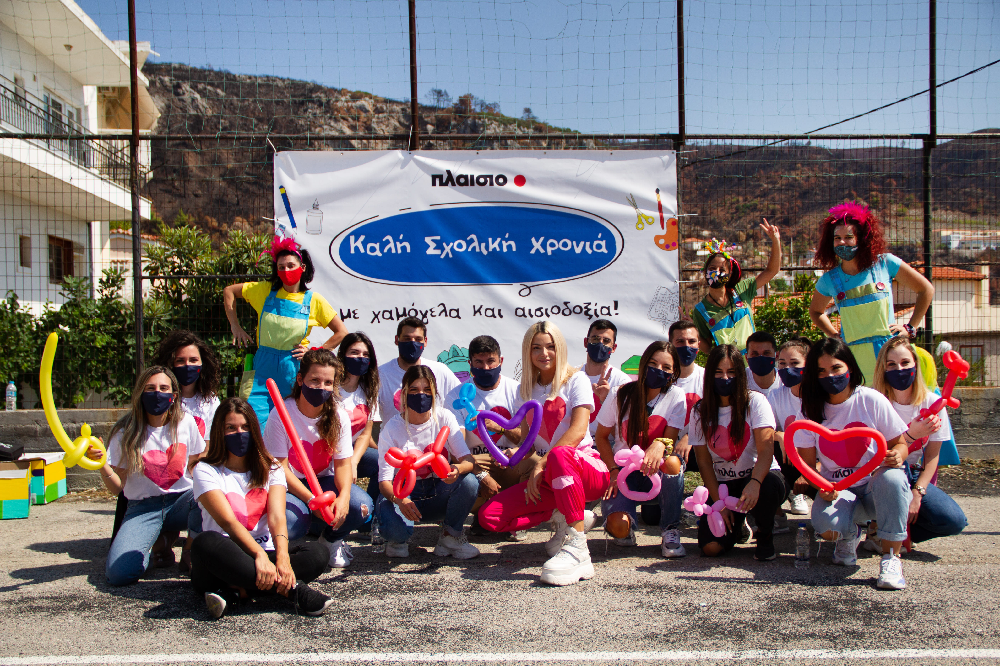

Μετά τις καταστροφικές πυρκαγιές που έπληξαν τη Βόρεια Εύβοια τον Αύγουστο του 2021, η εθελοντική ομάδα «Πλάι σου» συγκέντρωσε πάνω από 35.000 σχολικά είδη και τα μοίρασε στους 3.089 μαθητές των σχολείων των πυρόπληκτων περιοχών. Κατά την επίσκεψή τους στα σχολεία αυτά, οι εθελοντές διοργάνωσαν επίσης μια μικρή γιορτή για τα παιδιά, για να διαγράψουν ξανά τα χαμόγελα στα πρόσωπά τους και να τους δώσουν ελπίδα για το μέλλον.
Παράλληλα, Πλαίσιο & ομάδα «Πλάι σου», με γρήγορα αντανακλαστικά ανταποκριθήκαμε πρώτοι στην έκτακτη ανάγκη που προέκυψε σε οικιακό εξοπλισμό για τις πυρόπληκτες οικογένειες, ως ελάχιστη ένδειξη αλληλεγγύης, στήριξης και συμπαράστασης.